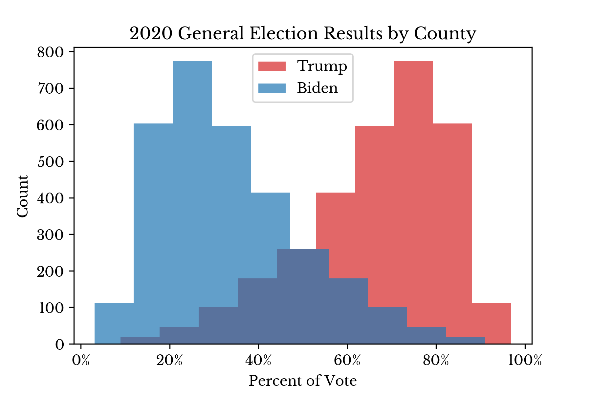
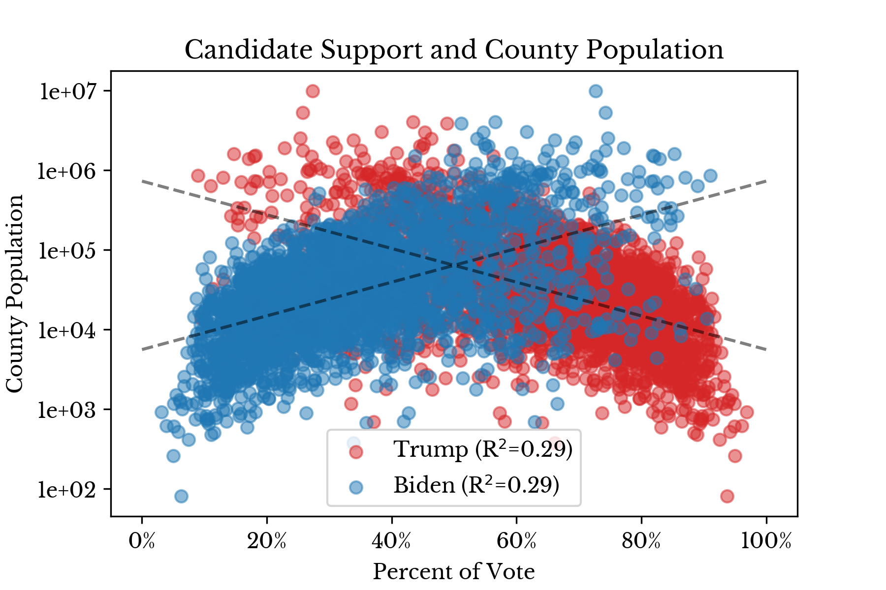
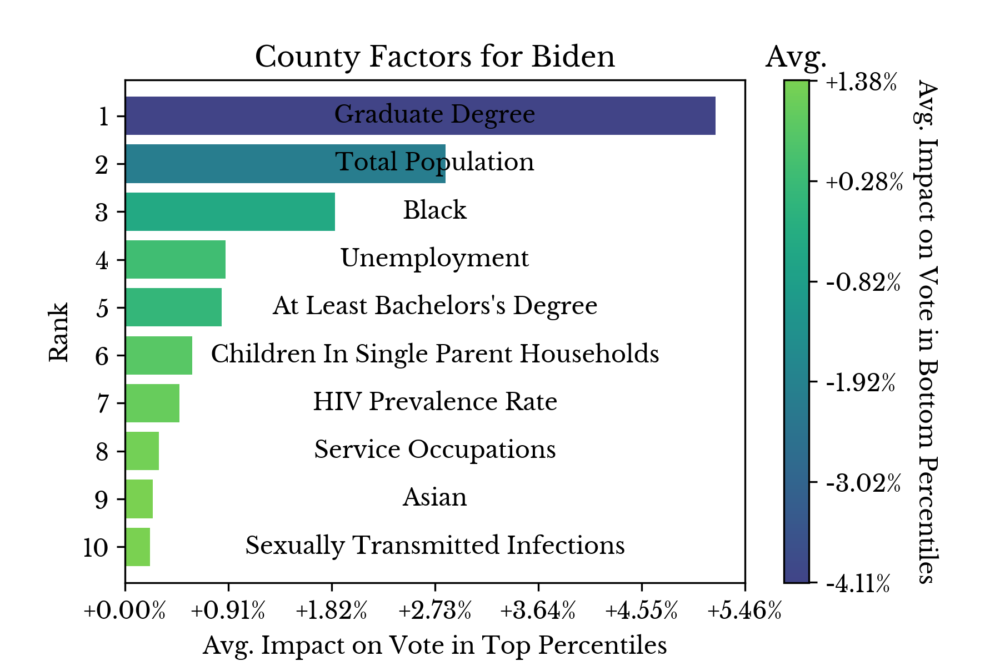
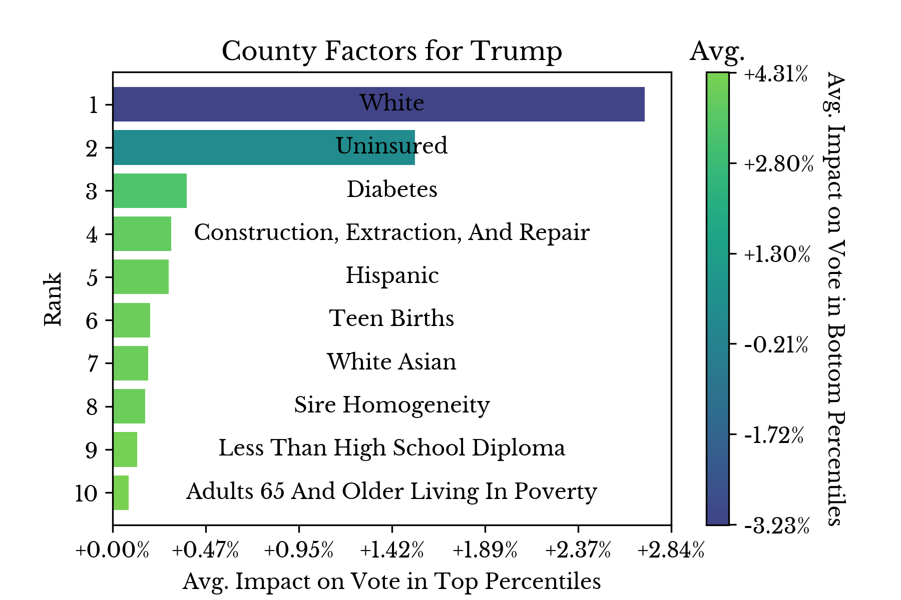
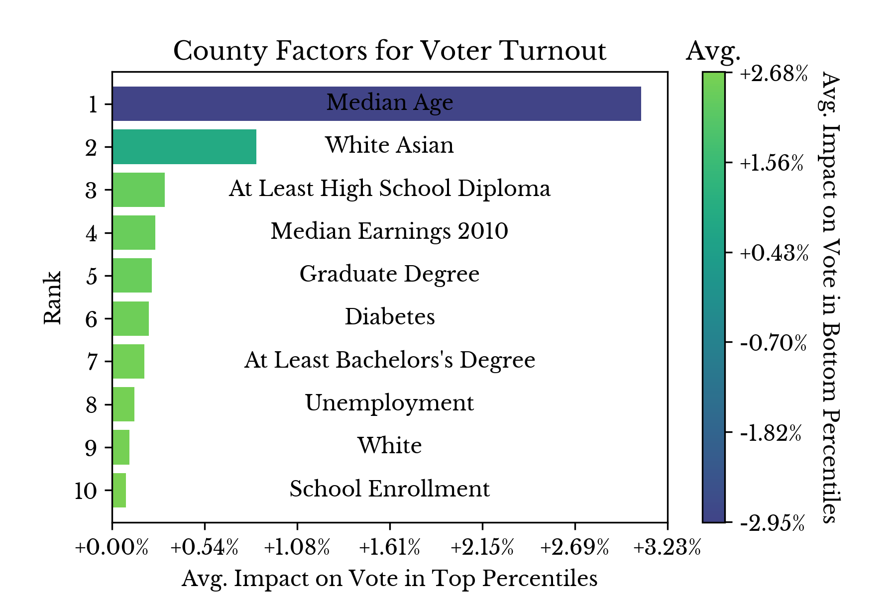

Figure 1: Popular Vote Results in 2016 and 2020
The distribution of candidate support by county is similar to that from the 2016 election. Additionally, the relationship between population size and party support is slightly stronger in the 2020 election than in the 2016 election. Namely, R²=0.26 in 2016 and R²=0.29 in 2020, an increase of 11.5%.|  |  |
Figure 2: Candidate Support by County in 2020
Again, the charts in Figure 2 suggest that, in general, Republicans win a larger number of counties by wide margins. At the same time, from Figure 1, the Democratic candidate is favored in the popular vote with roughly 76.4 million votes compared to 71.8 million votes for the Republican. Taken in conjunction, this once again suggests that Democrats lead in counties with larger populations and this is corroborated by the modest R² that is observed.Figure 3: Change in Voter Turnout in (2016 to 2020)
Next, change in support is considered for the two leading parties: Republican and Democrat. The influence of party candidates in other parties is neglected such that x = (1 - y), where x is the ratio support for the Republican candidate and y is the support for the Democratic candidate.Figure 4: Change in Party Support (2016 to 2020)
Figure 5 shows the counties that exhibit the greatest magnitude of change in support for either party. The color axis may be used to identify the direction of the change: Republican to Democrat or vice versa.Figure 5: Top Moving Counties (2016 to 2020)
Next, counties that flipped party when compared with the result from 2016 are explored. For the sake of comparison, counties that did not change their party between the two elections are differentiated with lighter colors.Figure 6: Counties that Changed Party Support (2016 to 2020)
In Figure 6, each county is colored with one of four colors which correspond to one of the following four statuses:|  |  |  |
Figure 7: County Historical Factors Influencing the 2020 Election
Figure 7 shows the most influential factors in determining candidate support for Trump, support for Biden, and overall voter turnout. The results obtained from these models are similar to those from the previous post, though there are a number of differences. The "White or Asian" demographic category became more influential in driving voter turnout, suggesting that these groups were partially responsible for the increase in turnout in 2020. With respect to support for the Democratic candidate, county population and the percentage of residents with graduate degrees became relatively more important in 2020.{kind=link}
{kind=link}
{kind=link}
{kind=link}
{kind=link}
{kind=link}
{kind=link}
{kind=link}
{kind=link}
{kind=link}